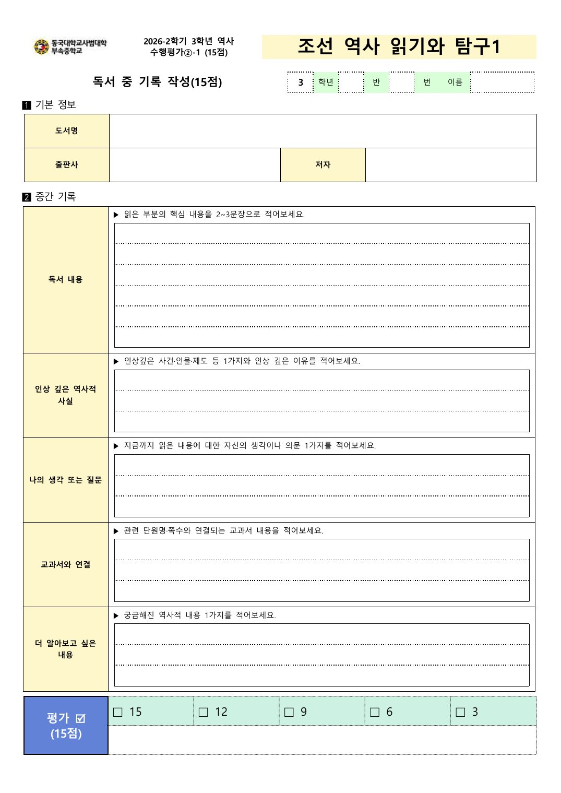

동대부중 2026-2학기 3학년 역사 수행평가 도우미
마음에 드는 책을 여러 권 담아두고 비교한 뒤, 읽을 책 한 권을 정하세요.
교과서가 한 줄로 지나간 조선의 이야기를, 한 권의 책으로 직접 읽어봅니다.
읽는 동안 떠오른 생각과 질문을 기록하고, 교과서와 견주어 보며 스스로 역사를 해석합니다.
책을 덮은 뒤 새로운 궁금증이 남는다면, 그것이 이 활동의 진짜 결과입니다.
조선시대를 다룬 책 1권 선택, 책 정보와 선정 이유 작성
구글 클래스룸 제출읽은 내용, 인상 깊은 사실, 나의 생각, 교과서 연결 작성
양식1 · 15점마감일까지 끝까지 읽고, 읽는 동안 생긴 궁금증 정리
스스로주요 내용과 역사적 의미, 교과서와 비교, 더 탐구하고 싶은 내용 작성
양식2 · 15점임진왜란이 교과서에 몇 쪽이나 나오는지 아나요? 두 쪽입니다. 7년 동안 이어진 전쟁인데 말이죠. 사화는 네 번이나 일어났는데 한 쪽, 농민들이 들고일어난 일은 몇 줄로 끝납니다. 이렇게 짧으니 외울 건 많고 재미는 없습니다. 당연합니다. 사람 이야기가 다 빠져 있으니까요. 그 빠진 이야기를 직접 읽어보자는 것이 이 활동입니다.
정리된 결론을 받아들이는 것만으로는 역사를 보는 눈이 자라지 않습니다. 사건이 어떻게 흘러갔는지 따라가 보고, 인물이 왜 그런 선택을 했는지 지켜보고, "나라면 어땠을까"를 스스로 물어볼 때 비로소 자랍니다. 그러려면 어느 정도 분량을 끝까지 읽어내는 시간이 필요합니다. 그래서 3주라는 시간을 드립니다.
이 활동에서 가장 중요한 것은 기록할 때마다 교과서의 어느 단원, 몇 쪽과 연결되는지 찾아보는 일입니다. 조금 귀찮을 수 있습니다. 하지만 해보면 알게 됩니다. 교과서에서 한 줄로 배운 내용이 책에서는 한 장으로 펼쳐지는 순간, 같은 사건을 두 책이 다르게 설명하는 장면을 마주하는 순간. 그때 이런 생각이 들 겁니다. "역사는 하나로 정해진 이야기가 아니구나." 이것이 역사 공부에서 가장 중요한 태도입니다.
기록장의 마지막 칸은 "더 알아보고 싶은 것"입니다. 이 활동이 잘된 것인지는 기록지를 얼마나 꼼꼼히 채웠는지로 정해지지 않습니다. 수행평가가 끝난 뒤에도 여러분이 다음 책을 집어드는지로 정해집니다. 궁금증이 하나만 남아도 충분합니다. 그러면 이 활동은 성공입니다.

교과서 단원
종류와 난이도
이런 말로 찾아보세요
고민 중인 책